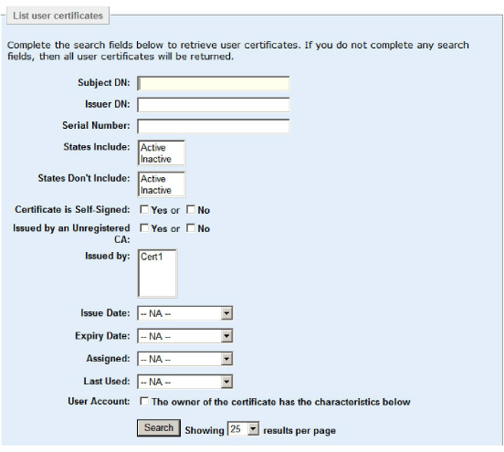
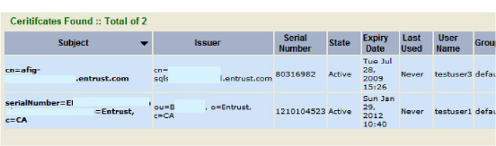
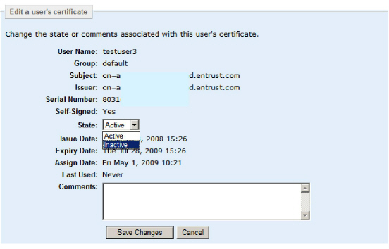
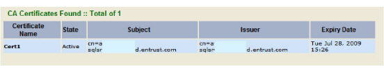
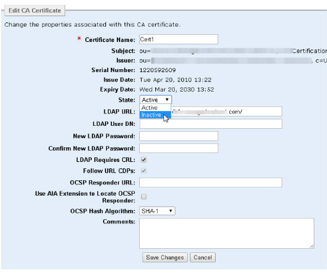
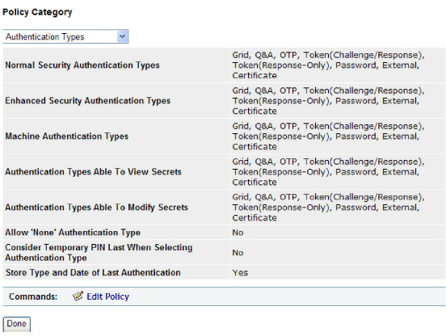
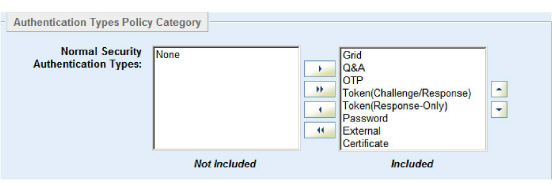
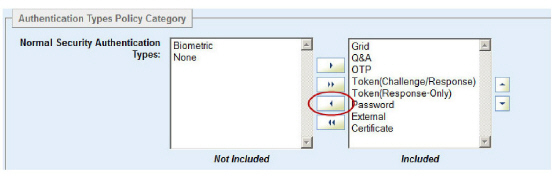

|
IdentityGuard Server 13.0 Administration Guide |
|
IdentityGuard Server 13.0 Administration Guide |
If you configure certificate authentication but later need to disable it, the easiest way to do so is to change the state of the user certificate or the CA certificate to INACTIVE.
To disable certificate authentication for all users, remove certificate authentication from the list of authentication types.
This topic provides procedures for both methods.
● To disable certificate authentication by making user certificates inactive
● To disable certificate authentication by making CA certificates inactive
● To disable certificate authentication across entire groups in Entrust IdentityGuard
To disable certificate authentication by making user certificates inactive
1. Log in to the Entrust IdentityGuard Administration interface as the administrator.
 On the
Windows computer where Entrust IdentityGuard is installed
On the
Windows computer where Entrust IdentityGuard is installed
2. Click Certificates.
The List user certificates screen appears.

3. Set the search criteria to find the certificates you want to make inactive. See Find users by certificate.
To find all user certificates, leave the search criteria blank.
4. Click Search.
The list of user certificates appears.

5. Click the certificate you want to make inactive.
6. The Certificate Details screen appears.
7. Click Edit Certificate.
8. The Edit a user’s certificate screen appears.

9. From the State drop-down list, select Inactive.
10. Click Save Changes.
This user certificate is now disabled.
To disable certificate authentication by making CA certificates inactive
11. Log in to the Entrust IdentityGuard Administration interface as the administrator.
On the
Windows computer where Entrust IdentityGuard is installed
2. Click Certificates.
3. Click CA Certificates.
4. The CA Certificate List Results screen appears.

5. Click the CA certificate you want to make inactive.
The Certificate Details screen appears.
6. Click Edit CA Certificate.C
7. The Edit CA Certificate screen appears.

8. From the State drop-down list, select Inactive.
9. Click Save Changes.
This CA certificate is now disabled.
To disable certificate authentication across entire groups in Entrust IdentityGuard
10. Log in to the Entrust IdentityGuard Administration interface as the administrator.
On the
Windows computer where Entrust IdentityGuard is installed
2. Click Policies.
The Policies List Results screen appears.
3. Select the policy that governs the group or groups for whom you want to disallow certificate authentication by clicking the policy name.
4. The Policy Information screen appears.
5. Under Policy Category, select Authentication Types.

6. Click Edit Policy.
The Edit policy information screen appears.

7. In the Normal Security Authentication Types, move Certificate from the Included list to the Not Included list.
a. Select Certificate.
b. Click the left arrow.

8. Scroll to the bottom of the window, and click Save Changes.
Certificate authentication is now disabled for all users using this policy.